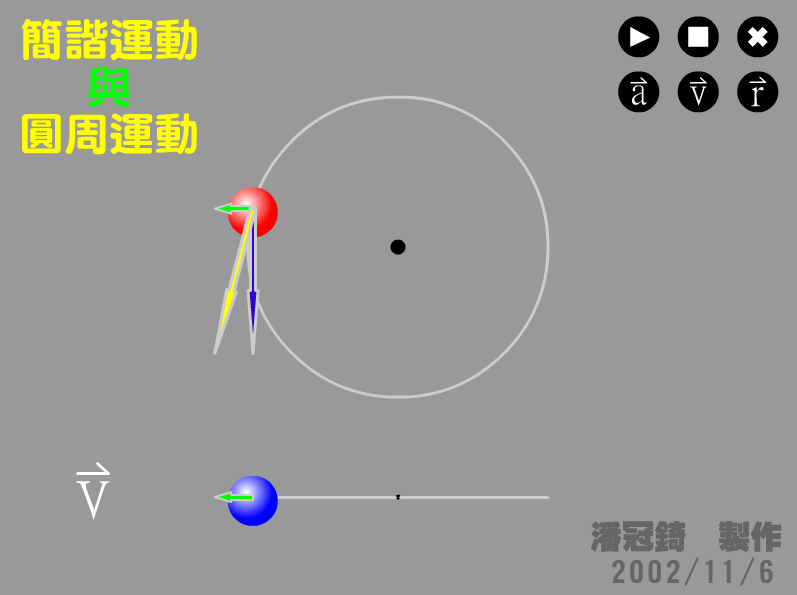

簡諧運動就是等速率圓週運動在直徑上的投影，畫面中紅球正在作等速率圓週運動， 想像一到光線從正上方照射下來，藍球就是紅球在水平線上的投影，正在作簡諧運動 ( Simple Harmonic Motion, S.H.M. )，分別按下右上方的 a、v、r 按鈕，可以顯示加速度、 速度、與位置向量。 仔細觀察，簡諧運動不僅位置是等速率圓週運動在直徑上的投影，連速度加、速度也都是呢！

↑動畫截圖。
檔案下載
[PC exe]